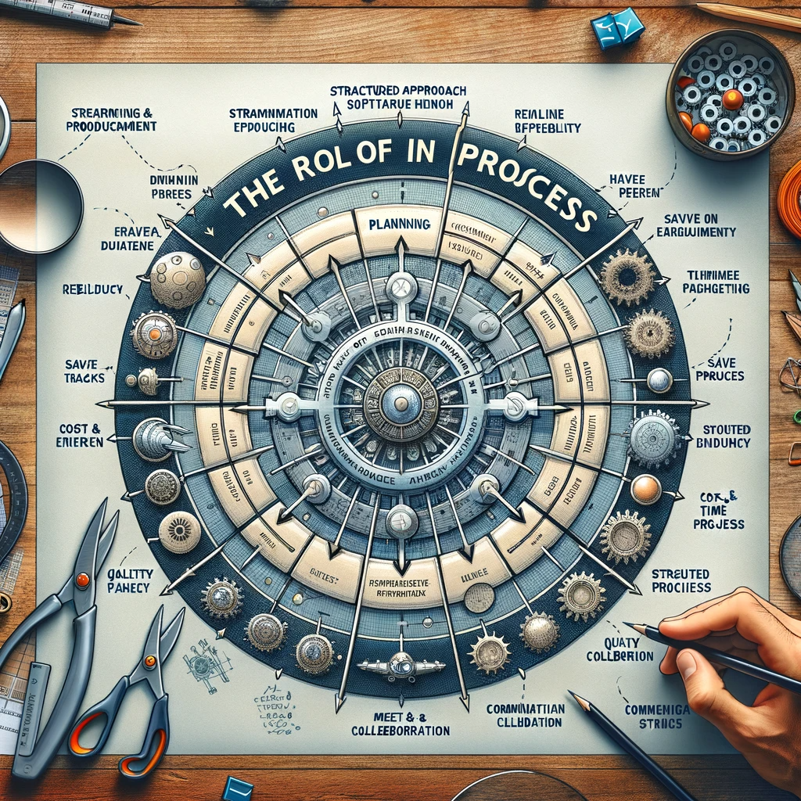
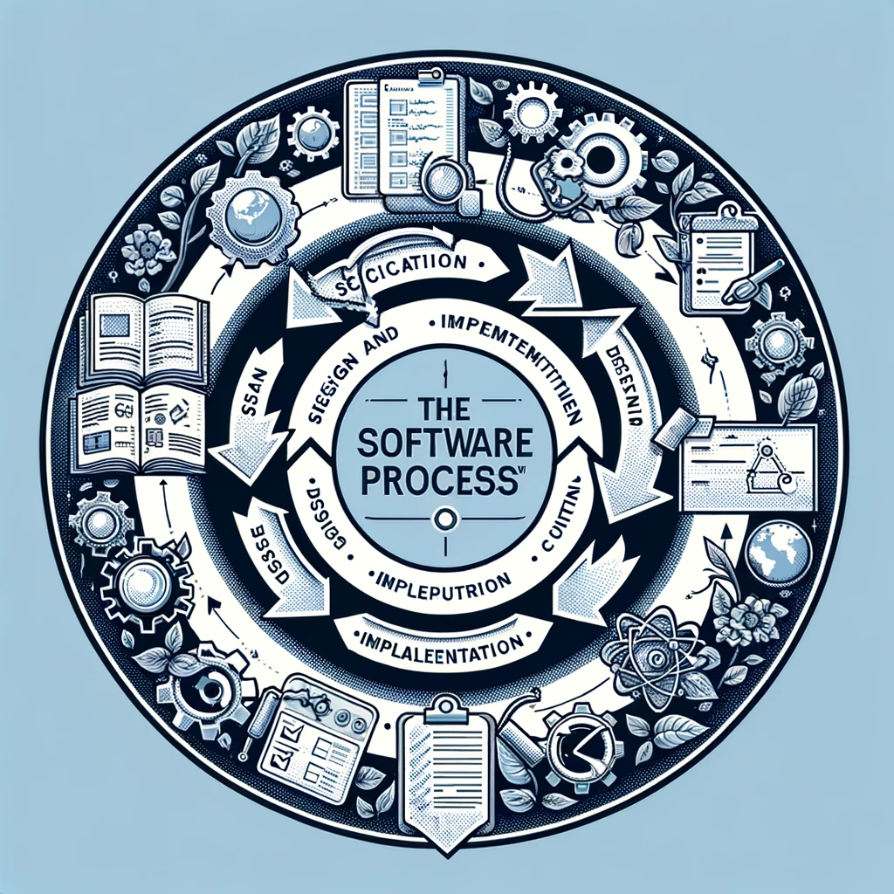
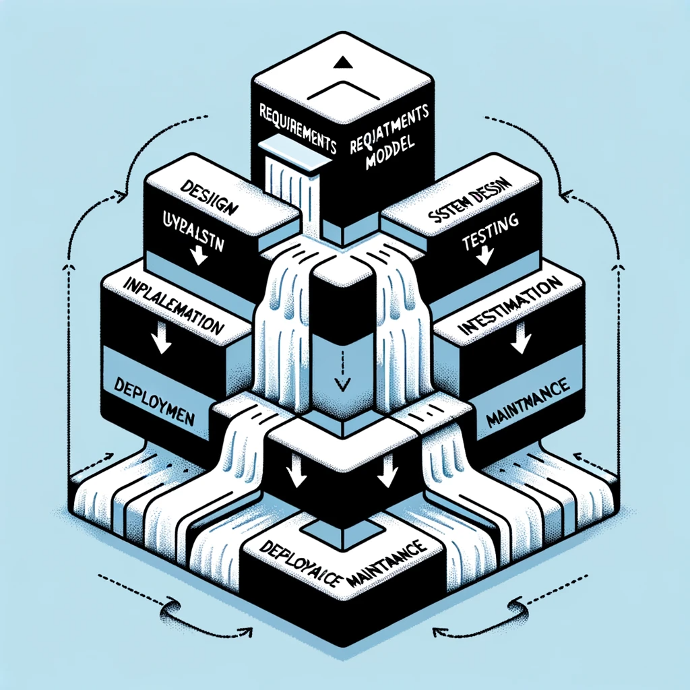
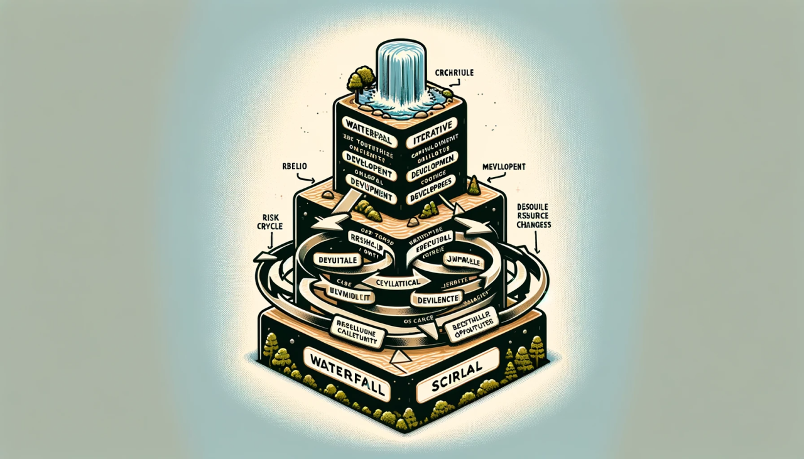

Software Process Models#
Outline#
Software process, software process models
Plan-driven and Agile process
Waterfall model
V-model
Incremental model
Iterative model
Spiral model
Objectives#
The primary objectives of this lecture are to provide an in-depth understanding of software process models, which are fundamental to the development of software systems. We aim to:
Introduce the concept of a software process and the various models that guide the development lifecycle.
Contrast the methodologies and principles underlying plan-driven and Agile processes.
Examine the Waterfall model, its structure, and where it fits in the spectrum of software development practices.
Explore the Spiral model, detailing its iterative nature and risk management focus.
Discuss the V-model, emphasizing its unique approach to validation and verification.
Delve into the Incremental model, understanding its phased deployment strategy and how it enables progressive development.
By the end of this lecture, students should be able to comprehend the distinctions, advantages, and limitations of each model, and how they can be applied effectively in different software development scenarios.
Recap: What is Software Engineering?#
Software engineering is a discipline designed to address complex software development challenges. It achieves this by:
Structuring development into manageable parts.
Ensuring scalable evolution of software products.
Optimizing costs and reducing error-related expenses.
Adapting to the dynamic nature of software environments.
A proficient software engineer is characterized by:
Technical expertise and strong communication skills.
Analytical thinking and effective teamwork.
A disciplined and motivated approach to work.
These qualities align with software engineering’s goals to reduce complexity, minimize costs, optimize time, and deliver reliable and effective software.
The Role of Process in Software Engineering#
{kind=link}
In software engineering, the process acts as the blueprint for planning, executing, and managing software development projects efficiently. It provides a structured approach to reduce complexity by dividing large problems into smaller, more manageable tasks, enabling developers to focus on one segment of the project at a time. By streamlining the production process, the role of the process is also to minimize costs and time, eliminating redundant tasks, and focusing efforts on critical path activities. It ensures that projects are completed within the allocated time and budget while meeting the required quality standards. This structured approach facilitates the effective management of large and complex projects, ensuring their reliability and effectiveness over time. Additionally, a well-defined process supports better communication among team members, leading to improved collaboration and productivity.
The Software Process#
{kind=link}
The software process is a structured set of activities necessary for the development of a software system. It encompasses several key phases:
Specification: This phase involves defining the requirements and what the system is expected to do.
Design and Implementation: This stage is about establishing the system’s structure and translating the design into an operational system.
Validation: During validation, the system is tested and checked to ensure it meets the customer’s requirements.
Evolution: Post-deployment, the system must adapt to the changing needs of its users and environment.
Each software process model is an abstract representation of this process, providing a specific perspective tailored to the nature of the project at hand. These models are essential in guiding teams through the complex landscape of software development, ensuring efficiency, effectiveness, and adaptability of the development efforts.
Software Process Descriptions#
Software process descriptions elucidate the framework within which software development activities occur, detailing the following elements:
Products: These are the tangible outcomes of each process activity, such as documentation, code, tests, and the final software application.
Roles: This aspect defines the responsibilities of the individuals participating in the process, ensuring that each activity is aligned with expertise and accountability.
Pre-conditions and Post-conditions: These statements assert the required conditions before an activity begins and the expected state after its completion, serving as quality checks and benchmarks for progress within the software lifecycle.
Plan-Driven vs Agile Processes#
In software development, Plan-Driven and Agile processes represent distinct approaches:
Plan-Driven Processes:
Emphasize upfront planning and design.
Involve detailed documentation.
Focus on predictability and control.
Sequential execution of phases.
Suited for environments where requirements are well-understood and changes are minimal.
Agile Processes:
Prioritize flexibility and customer feedback.
Iterative and incremental development.
Minimal upfront planning, with more focus on adaptive changes.
Continuous delivery of functional software.
Best in dynamic environments with evolving requirements.
The choice between Plan-Driven and Agile depends on project requirements, customer needs, and the volatility of the project environment.
Software Process Models#
Software process models are fundamental frameworks that outline the strategy for developing software. Key aspects include:
Structure: They provide a structured sequence of stages in software development.
Guidance: Models guide teams on what to do next during the software lifecycle.
Predictability: They offer a degree of predictability in software development.
Efficiency: Aimed at improving the efficiency of the development process.
Examples of such models include:
Waterfall Model: Emphasizes linear progression through phases such as requirements, design, implementation, verification, and maintenance.
V-Model: Stresses on verification and validation early in the development cycle.
Incremental Model: Allows partial implementation of the software and gradually adds functionality in increments.
Agile Model: Focuses on iterative development and customer collaboration.
Spiral Model: Combines iterative development with systematic aspects of the waterfall model, adding risk analysis.
Understanding these models is crucial as they significantly influence the organization, management, and success of software development projects.
Waterfall Model#
The Waterfall Model is one of the earliest software process models, structured in a linear sequential flow. This means that any phase in the development process begins only after the previous phase is complete. The model’s phases include Requirements Analysis, System Design, Implementation, Integration and Testing, Deployment, and Maintenance. Its disciplined approach is advantageous for projects with well-understood requirements. However, its rigid structure can be a drawback, as it does not accommodate changing requirements well after the project has commenced, making it less flexible than Agile models.
{kind=link}
Waterfall Model Phases#
The Waterfall Model is composed of distinct, consecutive phases:
Requirements Analysis: This is where all possible requirements of the system to be developed are captured in detail.
System Design: In this phase, the system’s architecture and design are defined and documented.
Implementation: The actual coding of the software takes place during this phase.
Integration and Testing: After coding, the system is put together as a whole and tested for any defects.
Deployment: Once testing is complete, the system is deployed to the user environment.
Maintenance: This final phase involves ongoing support and product enhancements after deployment.
Waterfall Model Drawbacks#
The Waterfall Model’s main disadvantages include:
Inflexible Partitioning: It enforces a strict phase-by-phase progression that limits responsiveness to evolving customer requirements.
Applicability: Due to its rigid structure, it is best suited for projects with well-defined and stable requirements, as it poorly accommodates changes during the design process.
Changing Requirements: It is less effective for business systems where requirements are unlikely to remain stable.
Large Systems Engineering Projects: The Waterfall Model is more commonly applied in large projects spread across several sites where its plan-driven nature aids in coordination.
V-model#
The V-model, also known as the Verification and Validation model, is a strict, sequential development process often used in software development. This model emphasizes the parallel nature of development and testing. The key stages in the V-model include:
Requirements Analysis
System Design
Architecture Design
Module Design
On the other side of the “V,” corresponding testing phases are aligned with each development stage:
Unit Testing
Integration Testing
System Testing
Acceptance Testing
The V-model is particularly useful for projects where requirements are clearly defined and unlikely to change.
V-model Benefits#
The V-model offers distinct advantages:
Systematic Approach: It provides a highly disciplined approach where each phase has specific deliverables and a review process.
Early Planning: All test planning and design work is done early in the life cycle, which helps in understanding the risks at the beginning.
Early Error Detection: By integrating testing into early development stages, errors can be detected early, reducing the cost of fixing them.
Rigorous Structure: Its structured approach ensures high-quality output, with clear milestones and deliverables.
Clarity in Design: Correspondence between development and testing stages leads to a greater focus on meeting original design requirements.
Disciplined Approach: The V-model enforces discipline in development, as each phase must be completed before the next begins, ensuring thoroughness.
Parallel Processes: Development and testing activities are parallel, allowing for simultaneous progress in both areas.
Quality Assurance: With its emphasis on corresponding testing phases for each development stage, the model inherently stresses on quality, making sure that no phase is closed without verifying its corresponding development stage.
V-model Problems#
The V-model has several limitations:
Inflexibility to Change: It is not well-suited for projects where requirements are likely to evolve, as any change requires revisiting and revising earlier stages.
Costly Changes: Modifications in the late stages of development can be very expensive and time-consuming due to the rigid structure of the model.
Assumption of Requirement Stability: The model operates under the assumption that requirements can be accurately defined at the beginning, which is not always possible.
Delayed Testing Cycle: Testing is delayed until after the completion of the development cycle, potentially leading to a backlog of unresolved issues late in the project.
Incremental Model#
The Incremental model is a method of software development where the product is designed, implemented, and tested incrementally—a little more is added each time, until the product is finished. It combines elements of the waterfall model with the iterative philosophy of prototyping.
Key features include:
Gradual Implementation: The software is developed in multiple standalone increments.
Manageable Iterations: Each increment is fully coded and tested, offering a functional release.
Flexibility: New increments can adapt to changes without a complete redesign.
Customer Satisfaction: Early increments provide immediate functionality to the customer.
The incremental model is beneficial when quick market entry with a subset of features is desirable.
Incremental Development Benefits#
The Incremental Development model offers several significant benefits:
Reduced Cost of Changes: Adapting to changing customer requirements is less costly compared to the waterfall model.
Less Rework: There is a reduced need for redoing analysis and documentation, saving time and resources.
Continuous Customer Feedback: It facilitates regular customer input, allowing for adjustments based on user responses to functional demonstrations.
Faster Delivery: Enables more rapid delivery and deployment, providing customers with useful software earlier.
Value Gain: Customers can begin to use and benefit from the software sooner, incrementally receiving value as new features are released.
Incremental Development Problems#
Incremental Development, while beneficial, also presents certain challenges:
Process Visibility: Managers may find it difficult to measure progress due to the lack of regular, substantial deliverables.
Documentation Overhead: Rapid development can render it cost-ineffective to produce detailed documentation for every increment.
Structural Degradation: As new increments are added, the system’s structure may degrade.
Refactoring Necessity: Without investing in refactoring, the software’s architecture may become convoluted, making further changes difficult and expensive.
Iterative Model#
The Iterative model is a cyclical software development process where iterations of the software are successively refined and expanded upon until the full system is developed:
Initial Version Development: Starts with the development of a limited version of the software, which is then gradually improved through several iterations.
Feedback Incorporation: Each iteration is based on feedback from the previous version, allowing for continuous refinement.
Progressive Refinement: Features are designed, developed, and tested incrementally over multiple cycles, with each iteration building upon the previous one.
Risk Management: Early iterations expose potential risks and enable proactive resolution before they become larger issues.
Adaptability: The model is adaptable to changes because it allows for modifications as requirements evolve or new information emerges.
Iterative Model Benefits#
The Iterative Model offers significant advantages in software development:
Early Release of Partial Systems: Provides early partial releases of the system, which can be a strategic advantage.
Flexible Design Changes: Enables incorporation of change requests and design alterations during the development process.
Risk Reduction: Helps in identifying risks early on by evolving requirements and user feedback.
Customer Satisfaction: Regular iterations and visible progress increase customer engagement and satisfaction.
Testing and Debugging: Makes testing and debugging during smaller iterations easier, as opposed to handling the entire system at once.
Iterative Model Problems#
While the Iterative Model has distinct advantages, it also presents several challenges:
Resource Intensiveness: Each iteration requires its own phase of testing and debugging, which can be resource-intensive.
Project Management Complexity: Managing the iterations can become complex, requiring meticulous tracking and control.
Change Management: Frequent changes can lead to scope creep if not managed carefully.
System Architecture Rigidity: Initial architecture may become a constraint in future iterations, potentially leading to significant refactoring costs.
Iterative Overhead: There can be significant overhead from repeatedly iterating through the process, particularly if increments are not well defined.
Spiral Model#
The Spiral Model is a sophisticated software development model that merges the iterative nature of development with the systematic aspects of the traditional waterfall model. It focuses on early identification and reduction of risks through a set of activities organized in a spiral, each loop representing a phase of the process:
Risk Analysis: At the core of each phase, rigorous risk analysis is conducted, allowing for proactive risk management.
Four Main Phases: The spiral model is characterized by four main quadrants: determining objectives, risk analysis and resolution, development and testing, and planning of the next iteration.
Customer Involvement: It includes the customer in all stages of development for feedback and refinement.
Iterative Refinement: Each loop through the spiral results in a more complete version of the software.
Flexibility for Changes: Adapts to evolving project requirements and customer needs.
Spiral vs Waterfall vs Iterative Model#
{kind=link}
Comparing the Spiral, Waterfall, and Iterative models reveals distinct differences:
Waterfall Model:
Linear and sequential approach.
Best for projects with well-defined requirements.
Difficulty in accommodating changes once a phase is completed.
Iterative Model:
Develops the software in repeated cycles.
More flexible than Waterfall, allowing for refinements.
Can lead to resource and management challenges.
Spiral Model:
Focuses on risk analysis and iterative development.
Combines features of both Waterfall and Iterative models.
Suitable for large, risky projects, but complex and potentially costly.
Each model has its strengths and is chosen based on the project’s risk, complexity, and requirements stability.
Spiral Model Benefits#
The Spiral Model is particularly beneficial for large, complex, and high-risk projects:
Risk Management: Places a strong emphasis on early identification and mitigation of risks, which can save significant time and costs.
Client Feedback: It allows for constant client feedback and iteration, ensuring the product meets the user’s needs.
Flexible Design: Provides a flexible approach to design, which can accommodate changes more easily than traditional models.
Systematic Approach: Despite its flexibility, it still incorporates the systematic elements of plan-driven models, which can help with managing complex projects.
Spiral Model Problems#
The Spiral Model can introduce specific challenges:
Complexity: Its structure is more complex than traditional models, requiring expert management and understanding.
Costly Iterations: Each spiral iteration may be cost-intensive, especially for smaller projects.
Extensive Documentation: Requires thorough documentation for each cycle, adding to the workload.
Risk Analysis Expertise: Demands significant expertise in risk evaluation, which can be a constraint if such expertise is not available.
Time Consumption: Due to the focus on risk and continuous iterations, the model can be time-consuming, potentially extending the delivery timelines.